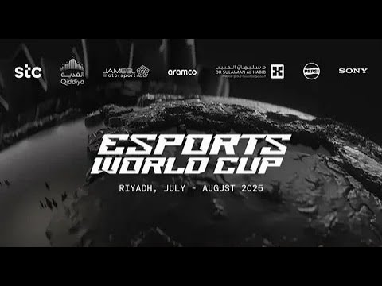
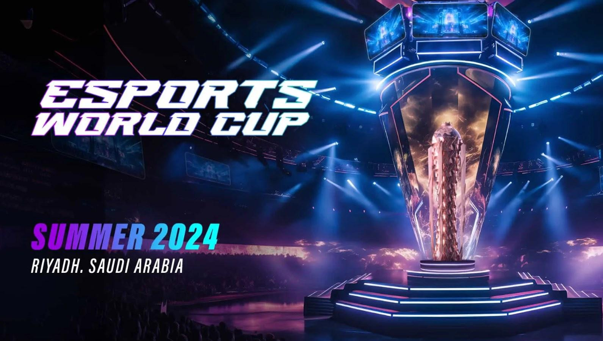
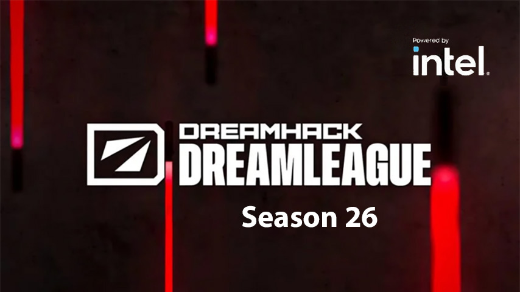
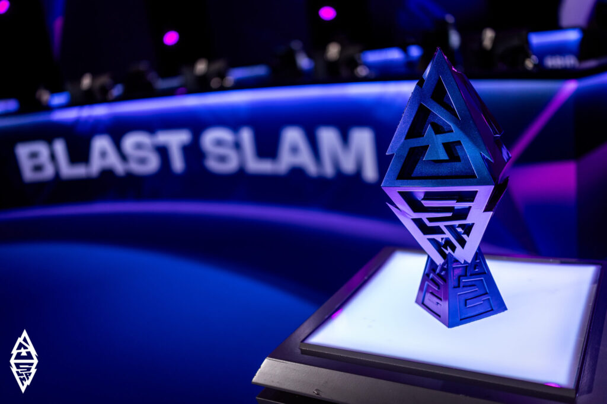
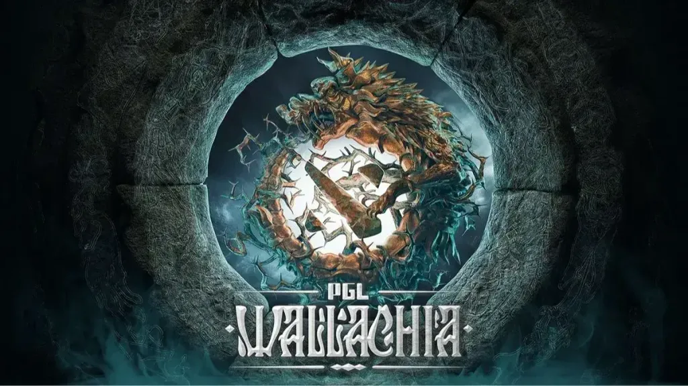

Esports World Cup 2025
Ивент служит финалом 3‑го сезона ESL Pro Tour; в прежние годы проводился под брендом Riyadh Masters, собирая сильнейшие команды мира.
Подборка из пяти заметных турниров текущей экосистемы: финальные ивенты ESL Pro Tour, сезоны DreamLeague и крупные чемпионаты от PGL и BLAST.

Ивент служит финалом 3‑го сезона ESL Pro Tour; в прежние годы проводился под брендом Riyadh Masters, собирая сильнейшие команды мира.

Третье издание серии, выступавшее финальным чемпионатом второго сезона ESL Pro Tour по Dota 2.

Сезон от ESL с 16 командами, групповыми этапами и плей‑офф; часть экосистемы ESL Pro Tour с призовым фондом в $1 млн.

Крупный чемпионат уровня Tier‑1 в календаре 2025 года с сильными участниками и значительным призовым фондом.

Серия от PGL с традиционно высоким уровнем продакшена и конкурентным участием топ‑команд [web:86].